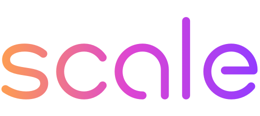

National Security @ Scale AI · Prev. @ FBI, AWS, HiddenLayer · Active TS/SCI w/ Full Scope Poly · GT MSCS ’28

Ask me anything about my background, experience, or what I'm working on.
i'm not actually doing a raw llm call im not rich lol